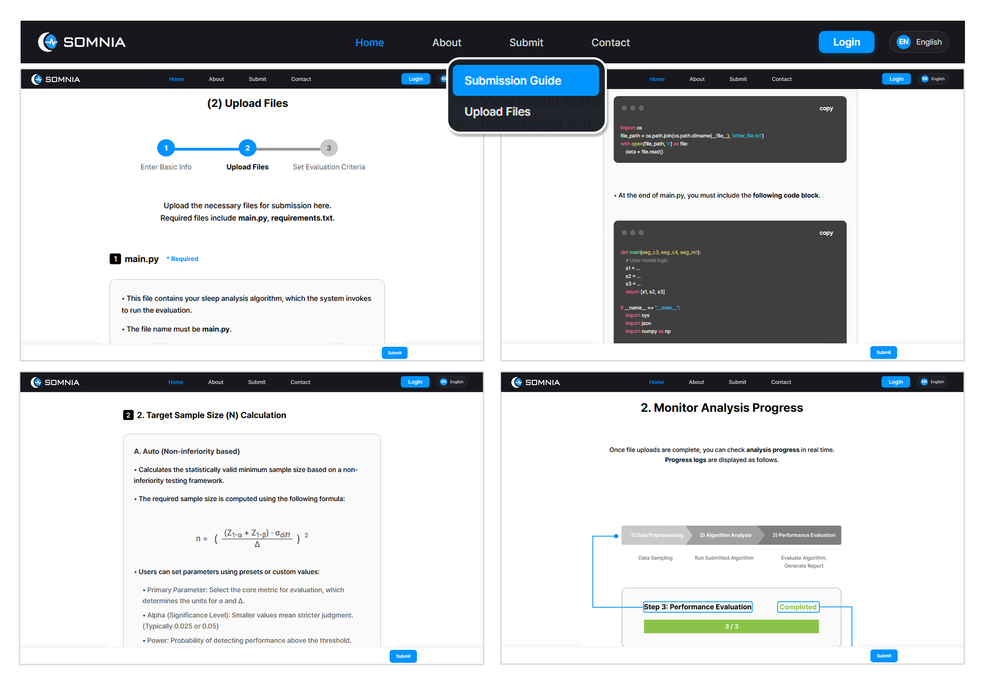

Harmonized physiological signals and sleep parameters across diverse cohorts, constructing a benchmark dataset of approximately 30,000 PSG recordings from both public and private clinical sources.


SOMNIA is an integrated, MDDT-inspired evaluation platform designed to deliver reproducible nonclinical in-silico assessments for AI-based sleep analysis tools. By addressing the severe heterogeneity in multi-center polysomnography (PSG) datasets and non-standardized evaluation protocols, SOMNIA provides objective, regulatory-ready performance evidence to accelerate medical device approval.
Harmonized physiological signals and sleep parameters across diverse cohorts, constructing a benchmark dataset of approximately 30,000 PSG recordings from both public and private clinical sources.

Streamlined integration process where users simply match their code's input and output variables to the platform's standardized schema to submit their algorithms effortlessly.

Upon submission, instantly evaluate algorithm performance across the entire dataset or targeted clinical subgroups, and receive comprehensive performance evaluation results as downloadable PDF reports.
This work was supported by the Ministry of Food and Drug Safety, Republic of Korea (No. RS-2023-00215716).
@article{somnia2026,
title = {SOMNIA: Sleep-device Oriented Model-based Nonclinical In-silico Assessment},
author = {TBD},
journal = {TBD},
year = {2026},
note = {Citation forthcoming}
}